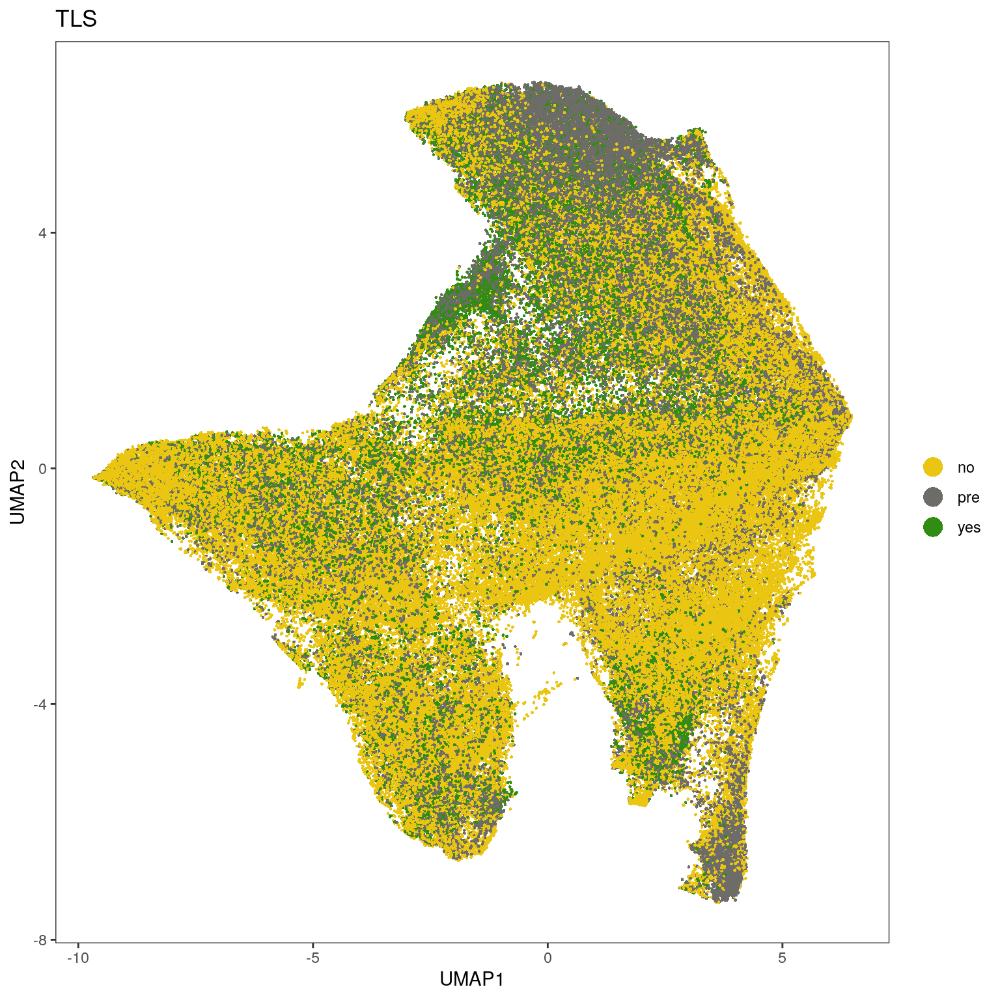
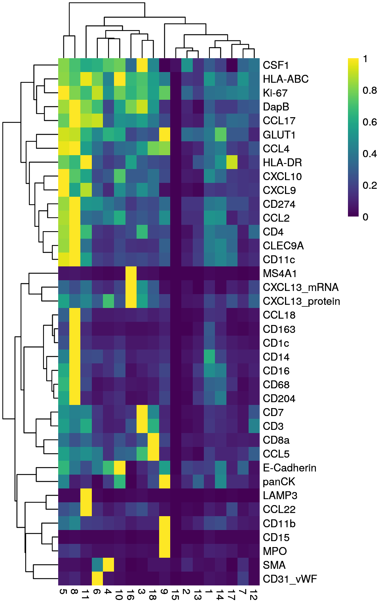
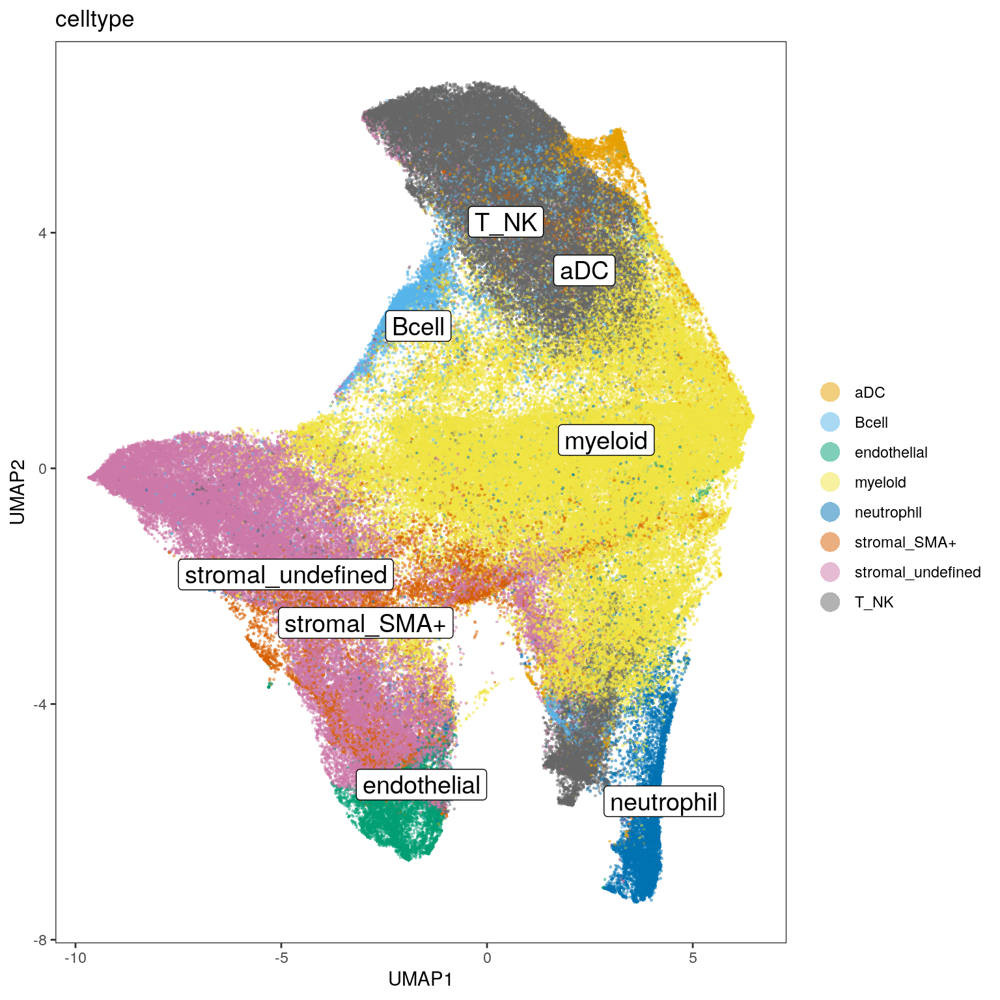
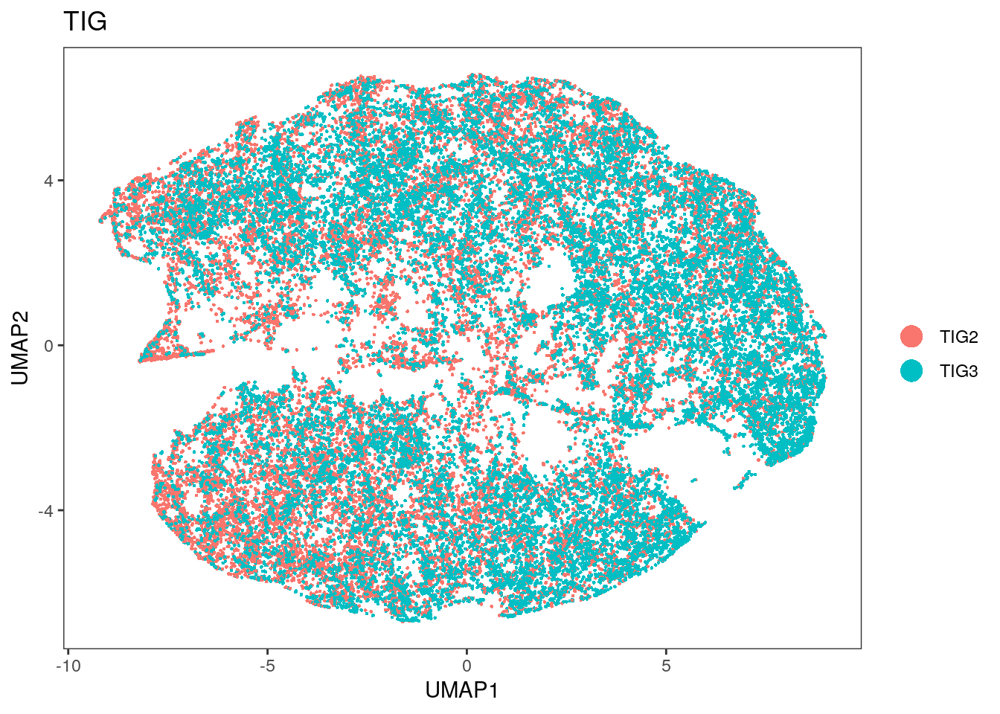
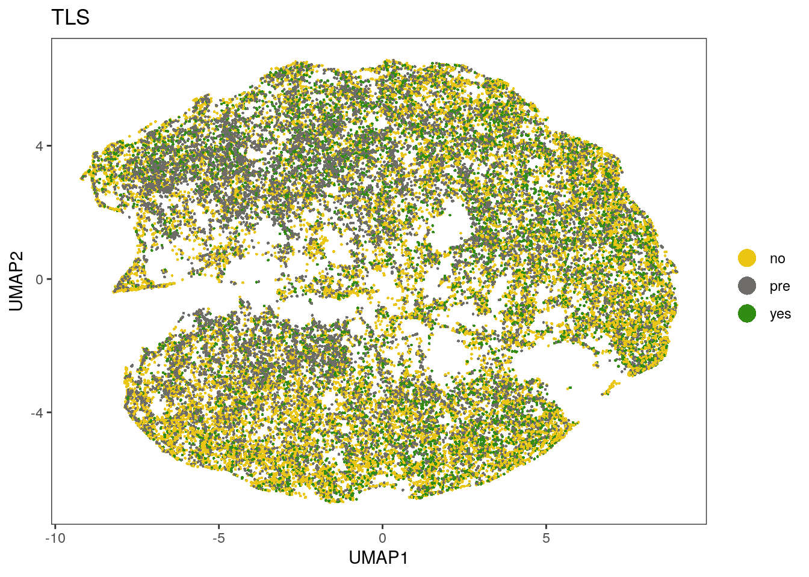
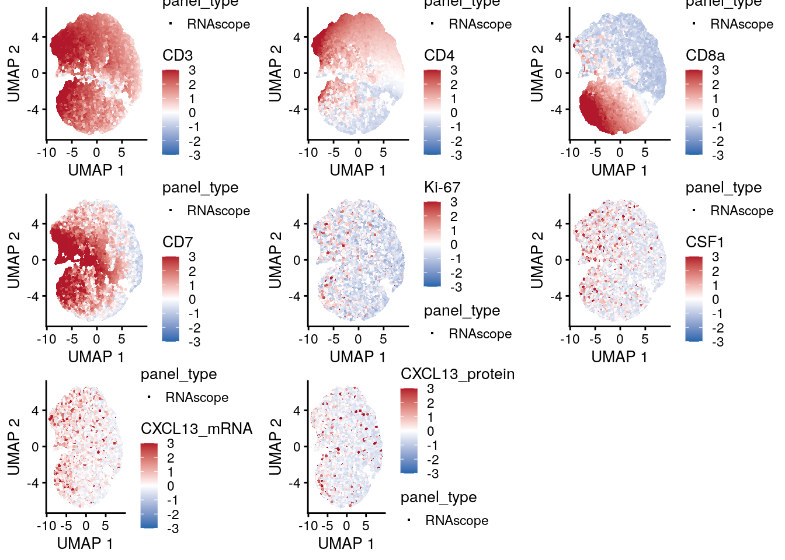
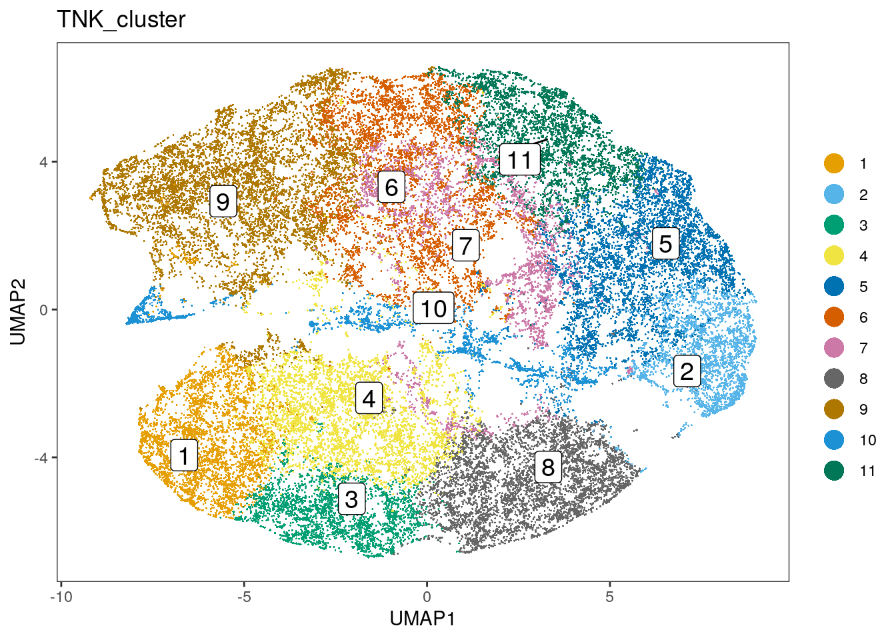
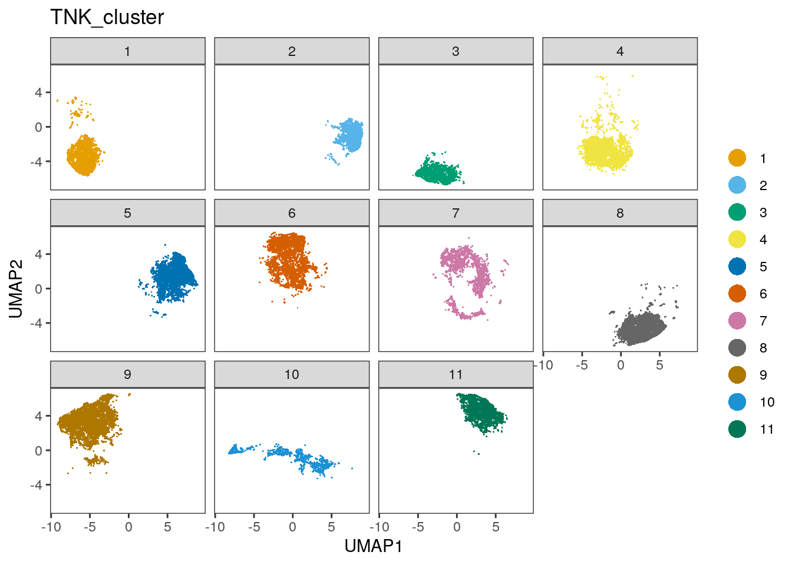
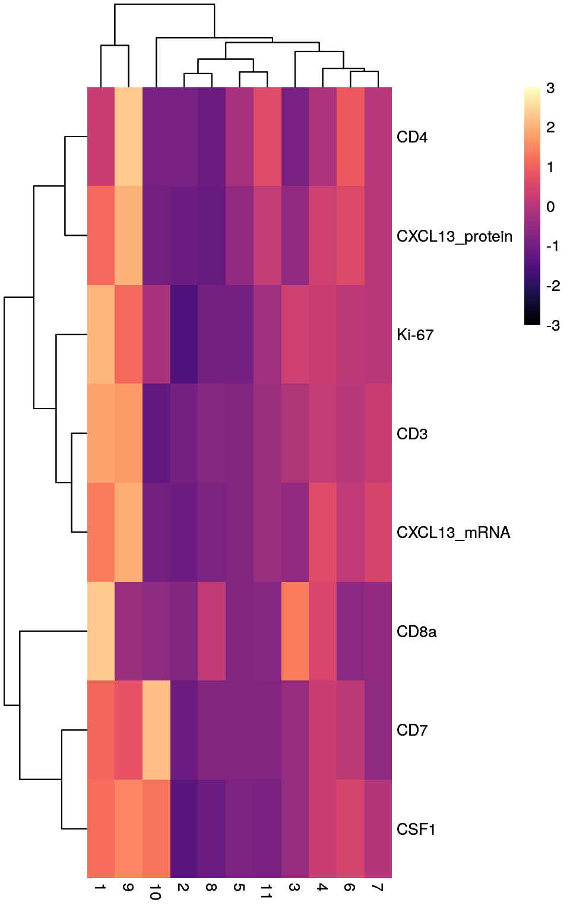

03_RNApanel_StromalSubclustering
SandraTietscher
2020-10-23
Last updated: 2020-10-23
Checks: 7 0
Knit directory: BCexh_IMC/
This reproducible R Markdown analysis was created with workflowr (version 1.6.2). The Checks tab describes the reproducibility checks that were applied when the results were created. The Past versions tab lists the development history.
Great! Since the R Markdown file has been committed to the Git repository, you know the exact version of the code that produced these results.
Great job! The global environment was empty. Objects defined in the global environment can affect the analysis in your R Markdown file in unknown ways. For reproduciblity it’s best to always run the code in an empty environment.
The command set.seed(12345) was run prior to running the code in the R Markdown file. Setting a seed ensures that any results that rely on randomness, e.g. subsampling or permutations, are reproducible.
Great job! Recording the operating system, R version, and package versions is critical for reproducibility.
Nice! There were no cached chunks for this analysis, so you can be confident that you successfully produced the results during this run.
Great job! Using relative paths to the files within your workflowr project makes it easier to run your code on other machines.
Great! You are using Git for version control. Tracking code development and connecting the code version to the results is critical for reproducibility.
The results in this page were generated with repository version b75ae4d. See the Past versions tab to see a history of the changes made to the R Markdown and HTML files.
Note that you need to be careful to ensure that all relevant files for the analysis have been committed to Git prior to generating the results (you can use wflow_publish or wflow_git_commit). workflowr only checks the R Markdown file, but you know if there are other scripts or data files that it depends on. Below is the status of the Git repository when the results were generated:
Ignored files:
Ignored: analysis/.Rhistory
Untracked files:
Untracked: analysis/05_proteinPanel_StromalSubclustering.Rmd
Untracked: data/ProteinPanel_tumor_stroma_clusters.csv
Untracked: data/RNApanel_TNK_clusters.csv
Untracked: data/RNApanel_stromal_clusters.csv
Untracked: data/RNApanel_tumor_stroma_clusters.csv
Untracked: output/ProteinPanel/
Untracked: output/RNApanel/
Untracked: output/sce_ProteinPanel_afterQC.rds
Untracked: output/sce_ProteinPanel_initial.rds
Untracked: output/sce_RNApanel_afterQC.rds
Untracked: output/sce_RNApanel_initial.rds
Note that any generated files, e.g. HTML, png, CSS, etc., are not included in this status report because it is ok for generated content to have uncommitted changes.
These are the previous versions of the repository in which changes were made to the R Markdown (analysis/03_RNApanel_StromalSubclustering.Rmd) and HTML (docs/03_RNApanel_StromalSubclustering.html) files. If you’ve configured a remote Git repository (see ?wflow_git_remote), click on the hyperlinks in the table below to view the files as they were in that past version.
| File | Version | Author | Date | Message |
|---|---|---|---|---|
| Rmd | b75ae4d | SandraTietscher | 2020-10-23 | Add script for stromal subclustering for RNA panel |
Introduction
This script performs subclustering of stromal cells for the RNA panel. It further subclusters T/NK cells. Finally, it merges cell type labels back into the original object, resulting in the annotated full object.
Load libraries and data
# Load libraries
library(ggplot2)
library(SingleCellExperiment)
library(scater)
library(tidyverse)
library(dittoSeq)
library(viridis)
library(cowplot)
library(ggpubr)
library(scran)
library(plyr)
# Read SingleCellExperiment object (with stromal cells only)
sce_stromal <- readRDS(paste0(getwd(), "/output/RNApanel/sce_RNApanel_stroma.rds"))Stromal cell subclustering
Calculate UMAP on all stromal cells
markers_exclude_umap <- c("DNA1", "DNA2", "HH3", "CD206", "PD1", "Ki-67", "DapB", "GLUT1", "panCK", "E-Cadherin", "CCL4", "CXCL10", "CXCL9", "CCL5", "CCL18", "CXCL13_protein", "CXCL13_mRNA", "CCL22", "CCL17", "CSF1", "CCL2", "CD11b")
markers_include_umap <- rownames(assay(sce_stromal, "counts"))[! (rownames(assay(sce_stromal, "counts")) %in% markers_exclude_umap)]
sce_stromal <- runUMAP(sce_stromal, exprs_values = "exprs",
subset_row = rownames(assay(sce_stromal, "scaled")) %in% markers_include_umap)Visualize features on UMAP
dittoDimPlot(sce_stromal, var = "sample", reduction.use = "UMAP", size = 0.5,
color.panel = metadata(sce_stromal)$colour_vectors$sample, opacity = 0.2) dittoDimPlot(sce_stromal, var = "sample", reduction.use = "UMAP", size = 0.5,
color.panel = metadata(sce_stromal)$colour_vectors$sample, split.by = "sample", opacity = 0.2) dittoDimPlot(sce_stromal, var = "TIG", reduction.use = "UMAP", size = 0.5,
color.panel = metadata(sce_stromal)$colour_vectors$TIG)dittoDimPlot(sce_stromal, var = "TLS", reduction.use = "UMAP", size = 0.5,
color.panel = metadata(sce_stromal)$colour_vectors$TLS)
Visualize marker expression on UMAP
# Plot expression of all markers
p.list <- list()
for(i in rownames(sce_stromal)){
p.list[[i]] <- plotUMAP(sce_stromal, colour_by = i, by_exprs_values = "scaled",
point_size = 0.5, point_alpha = 1, shape_by = "panel_type") + scale_colour_gradient2(name = i, low = "#2166ac", mid = "white", high = "#b2182b", limits = c(-3, 3))
}
plot_grid(plotlist = p.list, ncol = 7)
Run graph-based clustering for stromal subset (Phenograph)
Display clusters on UMAP.
cluster_counts_stromal <- subset(assay(sce_stromal, "normalized"), rownames(assay(sce_stromal, "normalized")) %in% markers_include_umap)
g <- buildSNNGraph(cluster_counts_stromal, k=10)
clust <- igraph::cluster_louvain(g)$membership
table(clust)clust
1 2 3 4 5 6 7 8 9 10 11 12 13
13954 14102 9865 10016 21677 5907 11658 5987 8502 4708 4928 20843 15695
14 15 16 17 18
19914 15957 9100 4320 15586 write.csv(table(clust), paste0(getwd(), "/output/RNApanel/stromal_cluster_cellnumbers.csv"), row.names = FALSE)
#add cluster information to sce object
sce_stromal$stromal_cluster <- as.factor(clust)
#plot on umap
dittoDimPlot(sce_stromal, var = "stromal_cluster", reduction.use = "UMAP", size = 0.2, do.label = TRUE, opacity = 0.2)dittoDimPlot(sce_stromal, var = "stromal_cluster", reduction.use = "UMAP", size = 0.2, split.by = "stromal_cluster", opacity = 0.2)Plot mean expression for each cluster
clustermean <- aggregateAcrossCells(sce_stromal, ids = DataFrame(cluster = sce_stromal$stromal_cluster), average = TRUE)
colnames(clustermean) <- clustermean$cluster
# Center and scale raw counts
assay(clustermean, "scaled") <- t(scale(t(assay(clustermean, "counts"))))
# Normalize raw counts
norm_counts <- t(apply(assay(clustermean, "counts"), 1, function(x)(x-min(x))/(max(x)-min(x))))
assay(clustermean, "normalized", withDimnames = FALSE) <- norm_counts
## Plot only relevant markers
exclude_plot <- c("DNA1", "DNA2", "HH3")
include_plot <- rownames(assay(sce_stromal, "counts"))[! (rownames(assay(sce_stromal, "counts")) %in% exclude_plot)]
## Plot
# Z-scaled
dittoHeatmap(clustermean[include_plot,], assay = "scaled", scale = "none",
heatmap.colors = magma(100),
cluster_cols = TRUE, show_colnames = TRUE,
breaks = seq(-3, 3, length.out = 101))# Normalized (0-1)
dittoHeatmap(clustermean[include_plot,], assay = "normalized", scale = "none",
heatmap.colors = viridis(100),
cluster_cols = TRUE, show_colnames = TRUE)
Assign cell type labels
Manual cell type assignment based on canonical marker expression.
labels <- read.csv(paste0(getwd(), "/data/RNApanel_stromal_clusters.csv"))
label_list <- labels$class[match(sce_stromal$stromal_cluster, labels$cluster)]
sce_stromal$celltype <- label_list
# Plot on UMAP
dittoDimPlot(sce_stromal, var = "celltype", reduction.use = "UMAP", size = 0.5, opacity = 0.5)
#Plot subtype proportions per sample
tab <- as.data.frame(prop.table(table(sce_stromal$sample, sce_stromal$celltype), margin = 1))
colnames(tab) <- c("sample", "celltype", "proportion")
ggplot(tab, aes(sample, y = proportion, fill=celltype)) +
geom_bar(stat="identity")+
theme(axis.title.x=element_blank(), axis.title.y = element_blank())+
theme(panel.background = element_blank(), axis.text.x = element_text(angle = 30))T/NK cell subclustering
To cluster the T/NK population into the main subtypes, we will only use the main markers CD3, CD4, CD8 and CD7.
Subset T_NK cell object
Re-normalize counts after subsetting.
cellid <- colnames(sce_stromal)
TNK_x <- which(sce_stromal$celltype == "T_NK")
cellid_TNK <- colnames(sce_stromal)[TNK_x]
sce_TNK <- sce_stromal[,cellid_TNK]
#Re-normalize counts
counts <- sce_TNK@assays@data@listData$counts
perc99 <- apply(counts, 1, function(x) quantile(x, 0.99))
norm_counts <- t(apply(counts, 1, function(x)(x-min(x))/(quantile(x, 0.99)-min(x))))
norm_counts <- t(apply(norm_counts, 1, function(x) pmin(x, 1)))
assay(sce_TNK, "normalized", withDimnames = FALSE) <- norm_countsCalculate UMAP on T/NK cells
Visualize features and marker expression
markers_include_TNK <- c("CD3", "CD4", "CD8a", "CD7")
markers_extended <- c("CD3", "CD4", "CD8a", "CD7", "PD1", "Ki-67", "CSF1", "CXCL13_mRNA", "CXCL13_protein")
sce_TNK <- runUMAP(sce_TNK, exprs_values = "normalized",
subset_row = rownames(assay(sce_TNK, "normalized")) %in% markers_include_TNK)
dittoDimPlot(sce_TNK, var = "sample", reduction.use = "UMAP", size = 0.5,
color.panel = metadata(sce_TNK)$colour_vectors$sample)dittoDimPlot(sce_TNK, var = "sample", reduction.use = "UMAP", size = 0.5,
color.panel = metadata(sce_TNK)$colour_vectors$sample, split.by = "sample")dittoDimPlot(sce_TNK, var = "TIG", reduction.use = "UMAP", size = 0.5,
color.panel = metadata(sce_TNK)$colour_vectors$TIG)
dittoDimPlot(sce_TNK, var = "TLS", reduction.use = "UMAP", size = 0.5,
color.panel = metadata(sce_TNK)$colour_vectors$TLS)
# Plot expression of included markers
p.list <- list()
for(i in markers_extended){
p.list[[i]] <- plotUMAP(sce_TNK, colour_by = i, by_exprs_values = "scaled",
point_size = 0.5, point_alpha = 1, shape_by = "panel_type") + scale_colour_gradient2(name = i, low = "#2166ac", mid = "white", high = "#b2182b", limits = c(-3, 3))
}
plot_grid(plotlist = p.list, ncol = 3)
T/NK Subclustering
cluster_counts_TNK <- subset(assay(sce_TNK, "normalized"), rownames(assay(sce_TNK, "normalized")) %in% markers_include_TNK)
g <- buildSNNGraph(cluster_counts_TNK, k=50)
clust <- igraph::cluster_louvain(g)$membership
table(clust)clust
1 2 3 4 5 6 7 8 9 10 11
3949 2926 2810 4729 5296 4906 3218 5150 7325 2336 3649 #add cluster information to sce object
sce_TNK$TNK_cluster <- as.factor(clust)
#plot on umap
dittoDimPlot(sce_TNK, var = "TNK_cluster", reduction.use = "UMAP", size = 0.2, do.label = TRUE)
dittoDimPlot(sce_TNK, var = "TNK_cluster", reduction.use = "UMAP", size = 0.2, split.by = "TNK_cluster")
Mean expression for each T/NK subcluster
clustermean <- aggregateAcrossCells(sce_TNK, ids = DataFrame(cluster = sce_TNK$TNK_cluster), average = TRUE)
colnames(clustermean) <- clustermean$cluster
# Center and scale raw counts
assay(clustermean, "scaled") <- t(scale(t(assay(clustermean, "counts"))))
# Normalize raw counts
norm_counts <- t(apply(assay(clustermean, "counts"), 1, function(x)(x-min(x))/(max(x)-min(x))))
assay(clustermean, "normalized", withDimnames = FALSE) <- norm_counts
## Plot
# Z-scaled
dittoHeatmap(clustermean[markers_extended,], assay = "scaled", scale = "none",
heatmap.colors = magma(100),
cluster_cols = TRUE, show_colnames = TRUE,
breaks = seq(-3, 3, length.out = 101))
# Normalized (0-1)
dittoHeatmap(clustermean[markers_extended,], assay = "normalized", scale = "none",
heatmap.colors = viridis(100),
cluster_cols = TRUE, show_colnames = TRUE)Assign subtype labels
labels <- read.csv(paste0(getwd(), "/data/RNApanel_TNK_clusters.csv"))
label_list <- labels$class[match(sce_TNK$TNK_cluster, labels$cluster)]
sce_TNK$T_subtype <- label_list
#plot on umap
dittoDimPlot(sce_TNK, var = "T_subtype", reduction.use = "UMAP", size = 0.5, do.label = TRUE)#Plot subtype proportions per sample
tab <- as.data.frame(prop.table(table(sce_TNK$sample, sce_TNK$T_subtype), margin = 1))
colnames(tab) <- c("sample", "T_subtype", "proportion")
ggplot(tab, aes(sample, y = proportion, fill=T_subtype)) +
geom_bar(stat="identity")+
theme(axis.title.x=element_blank(), axis.title.y = element_blank())+
theme(panel.background = element_blank(), axis.text.x = element_text(angle = 30))Combine all celltype labels into full SCE object
# read in objects
sce_RNA <- readRDS(paste0(getwd(), "/output/RNApanel/sce_RNApanel_TS_assigned.rds"))
sce_RNA_sub <- readRDS(paste0(getwd(), "/output/RNApanel/sce_RNApanel_sub_UMAP.rds"))
## Prepare dataframe with cell IDs and celltype labels ##
# Tumor cells
tumor_ids <- as.data.frame(colnames(sce_RNA)[which(sce_RNA$cell_class == "tumor")])
colnames(tumor_ids) <- "cellID"
tumor_ids$celltype <- "tumor"
# Stromal cells without T/NK
stromal_ids <- as.data.frame(colnames(sce_stromal)[which(sce_stromal$celltype != "T_NK")])
colnames(stromal_ids) <- "cellID"
stromal_ids$celltype <- sce_stromal[,stromal_ids$cellID]$celltype
# TNK cells
TNK_ids <- as.data.frame(colnames(sce_TNK))
colnames(TNK_ids) <- "cellID"
TNK_ids$celltype <- sce_TNK$T_subtype
# Combine
ids_table <- rbind(tumor_ids, stromal_ids, TNK_ids)
# Add to full object
cellids_ordered <- as.data.frame(colnames(sce_RNA))
colnames(cellids_ordered)<- "cellID"
cellids_merged <- join(cellids_ordered, ids_table, by = "cellID")
sce_RNA$celltype <- cellids_merged$celltypePlot celltypes on UMAP
Use the randomly subset SCE object (120.000 cells).
# Assign cluster numbers to the right cells
sub_cellnames <- colnames(sce_RNA_sub)
celltype_sub <- sce_RNA[,sub_cellnames]$celltype
sce_RNA_sub$celltype <- celltype_sub
#plot on umap
dittoDimPlot(sce_RNA_sub, var = "celltype", reduction.use = "UMAP", size = 0.5, do.label = TRUE)Plot celltype proportions per sample and per image
Includ TLS and pre-TLS images.
# Plot cell type frequencies per sample
tab <- as.data.frame(prop.table(table(sce_RNA$sample, sce_RNA$celltype), margin = 1))
colnames(tab) <- c("sample", "celltype", "proportion")
ggplot(tab, aes(sample, y = proportion, fill=celltype)) +
geom_bar(stat="identity")+
theme(axis.title.x=element_blank(), axis.title.y = element_blank())+
theme(panel.background = element_blank(), axis.text.x = element_text(angle = 30))# Plot cell type frequencies per image
tab <- as.data.frame(prop.table(table(sce_RNA$ImageNumber, sce_RNA$celltype), margin = 1))
colnames(tab) <- c("image", "celltype", "proportion")
ggplot(tab, aes(image, y = proportion, fill=celltype)) +
geom_bar(stat="identity")+
theme(axis.title.x=element_blank(), axis.title.y = element_blank())+
theme(panel.background = element_blank(), axis.text.x = element_text(angle = 30))Save object
saveRDS(sce_RNA, paste0(getwd(), "/output/RNApanel/sce_RNApanel_celltypes.rds"))
sessionInfo()R version 4.0.2 (2020-06-22)
Platform: x86_64-pc-linux-gnu (64-bit)
Running under: Ubuntu 20.04 LTS
Matrix products: default
BLAS/LAPACK: /usr/lib/x86_64-linux-gnu/openblas-openmp/libopenblasp-r0.3.8.so
locale:
[1] LC_CTYPE=en_US.UTF-8 LC_NUMERIC=C
[3] LC_TIME=en_US.UTF-8 LC_COLLATE=en_US.UTF-8
[5] LC_MONETARY=en_US.UTF-8 LC_MESSAGES=C
[7] LC_PAPER=en_US.UTF-8 LC_NAME=C
[9] LC_ADDRESS=C LC_TELEPHONE=C
[11] LC_MEASUREMENT=en_US.UTF-8 LC_IDENTIFICATION=C
attached base packages:
[1] parallel stats4 stats graphics grDevices utils datasets
[8] methods base
other attached packages:
[1] plyr_1.8.6 scran_1.16.0
[3] ggpubr_0.4.0 cowplot_1.0.0
[5] viridis_0.5.1 viridisLite_0.3.0
[7] dittoSeq_1.0.2 forcats_0.5.0
[9] stringr_1.4.0 dplyr_1.0.1
[11] purrr_0.3.4 readr_1.3.1
[13] tidyr_1.1.1 tibble_3.0.3
[15] tidyverse_1.3.0 scater_1.16.2
[17] SingleCellExperiment_1.10.1 SummarizedExperiment_1.18.2
[19] DelayedArray_0.14.1 matrixStats_0.56.0
[21] Biobase_2.48.0 GenomicRanges_1.40.0
[23] GenomeInfoDb_1.24.2 IRanges_2.22.2
[25] S4Vectors_0.26.1 BiocGenerics_0.34.0
[27] ggplot2_3.3.2 workflowr_1.6.2
loaded via a namespace (and not attached):
[1] ggbeeswarm_0.6.0 colorspace_1.4-1
[3] ggsignif_0.6.0 rio_0.5.16
[5] ellipsis_0.3.1 ggridges_0.5.2
[7] rprojroot_1.3-2 XVector_0.28.0
[9] BiocNeighbors_1.6.0 fs_1.5.0
[11] rstudioapi_0.11 farver_2.0.3
[13] ggrepel_0.8.2 RSpectra_0.16-0
[15] fansi_0.4.1 lubridate_1.7.9
[17] xml2_1.3.2 codetools_0.2-16
[19] knitr_1.29 jsonlite_1.7.0
[21] broom_0.7.0 dbplyr_1.4.4
[23] uwot_0.1.8 pheatmap_1.0.12
[25] compiler_4.0.2 httr_1.4.2
[27] dqrng_0.2.1 backports_1.1.8
[29] assertthat_0.2.1 Matrix_1.2-18
[31] limma_3.44.3 cli_2.0.2
[33] later_1.1.0.1 BiocSingular_1.4.0
[35] htmltools_0.5.0 tools_4.0.2
[37] igraph_1.2.5 rsvd_1.0.3
[39] gtable_0.3.0 glue_1.4.1
[41] GenomeInfoDbData_1.2.3 Rcpp_1.0.5
[43] carData_3.0-4 cellranger_1.1.0
[45] vctrs_0.3.2 DelayedMatrixStats_1.10.1
[47] xfun_0.16 openxlsx_4.1.5
[49] rvest_0.3.6 lifecycle_0.2.0
[51] irlba_2.3.3 statmod_1.4.34
[53] rstatix_0.6.0 edgeR_3.30.3
[55] zlibbioc_1.34.0 scales_1.1.1
[57] hms_0.5.3 promises_1.1.1
[59] RColorBrewer_1.1-2 curl_4.3
[61] yaml_2.2.1 gridExtra_2.3
[63] stringi_1.4.6 zip_2.0.4
[65] BiocParallel_1.22.0 rlang_0.4.7
[67] pkgconfig_2.0.3 bitops_1.0-6
[69] evaluate_0.14 lattice_0.20-41
[71] labeling_0.3 tidyselect_1.1.0
[73] RcppAnnoy_0.0.16 magrittr_1.5
[75] R6_2.4.1 generics_0.0.2
[77] DBI_1.1.0 foreign_0.8-80
[79] pillar_1.4.6 haven_2.3.1
[81] whisker_0.4 withr_2.2.0
[83] abind_1.4-5 RCurl_1.98-1.2
[85] car_3.0-8 modelr_0.1.8
[87] crayon_1.3.4 rmarkdown_2.3
[89] locfit_1.5-9.4 grid_4.0.2
[91] readxl_1.3.1 data.table_1.13.0
[93] blob_1.2.1 git2r_0.27.1
[95] reprex_0.3.0 digest_0.6.25
[97] httpuv_1.5.4 munsell_0.5.0
[99] beeswarm_0.2.3 vipor_0.4.5